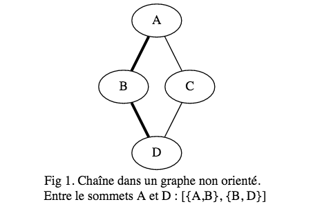
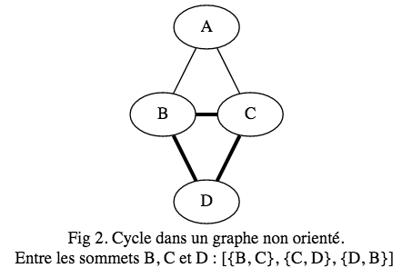
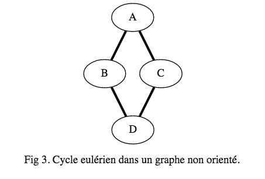
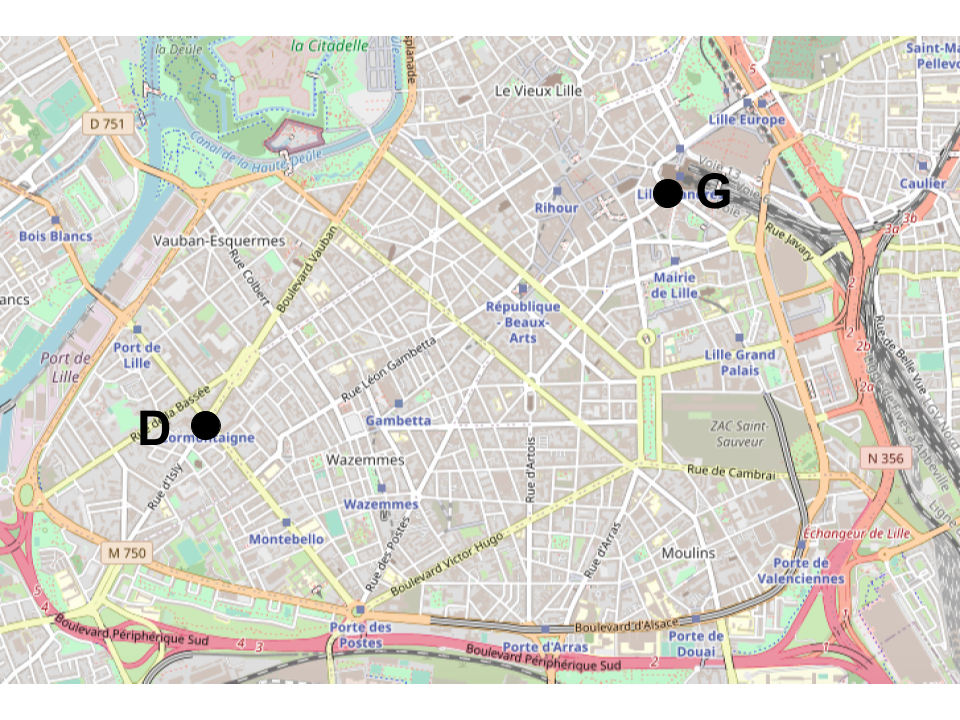
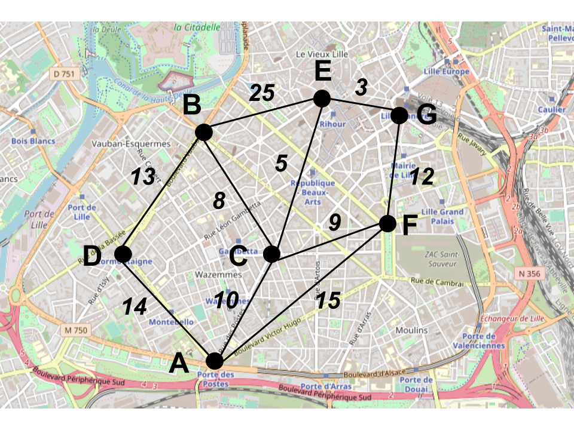

Contexte
- Sortir d'un labyrinthe,
- Rejoindre une destination au plus court,
- Planifier une tournée de livraison de colis,
- Router des paquets de données dans un réseau.
Voici quelques problèmes modélisables par un graphe. Nous allons voir dans cette section les algorithmes de résolution à partir de graphe.
Les 7 points de Königsberg
La ville de Königsberg (aujourd’hui Kaliningrad en Russie) se situe sur la rivière Pregolia et comporte deux îles. Sept ponts relient les îles entre elles ou aux rives, comme sur la figure ci-dessous.

Les habitants se posaient la question de savoir s’il existait une promenade permettant de passer une et une seule fois sur chaque pont pour revenir au point de départ.
Quelle réponse auriez-vous donner aux habitants de Königsberg ?
Pour traiter ce problème, nous devons définir les notions suivantes :
- Une chaîne, dans un graphe non orienté, est une suite d’arêtes mises bout à bout reliant deux sommets du graphe (Cf. Fig 1).
- Un cycle est une chaîne dont les extrémités coïncident, composée d’arêtes toutes distinctes (Cf. Fig 2).
- Une chaîne eulérienne est une chaîne composée de toutes les arêtes du graphe, prises une seule fois (Cf. Fig 3).
  
Théorème d'Euler
(i) Un graphe connexe admet une chaîne eulérienne entre les sommets $A$ et $B$ si et seulement si $A$ et $B$ sont les seuls sommets de degré impair.
(ii) Un graphe connexe admet un cycle eulérien si et seulement si tous les sommets sont de degré pair.
Répondre au problème des habitants de Königsberg consiste à déterminer si le graphe contient un cycle eulérien ou non.
Écrire l'algorithme qui prend en paramètre un graphe et indique s'il contient un cycle eulérien ou non.
Parcours de graphe
Ils nous serviront souvent en tant que procédures de base pour d'autres algorithmes.
Plus court chemin entre 2 sommets
Mettons-nous dans la place d'un livreur Super-eats qui se déplace en vélo. Il se situe actuellement aux abords d'un restaurant, situé au point $D$, et doit livrer une commande à un client situé au point $G$.

En tant que cycliste, le livreur se déplace uniquement sur les pistes cyclables. La carte suivante indique les pistes permettant de relier le point d'arrivée, ainsi que les temps pour atteindre les points intermédiaires.

Quel est le le plus court chemin entre $D$ et $G$ ?
Le graphe modélisant le problème est un graphe pondéré, où:
- Chaque sommet est un point d'intersection d'une piste cyclable,
- Chaque arête, une piste cyclable,
- Le poids de chaque arête, la durée en minutes pour parcourir la distance entre 2 sommets.
Le problème du livreur Super-Eats est de déterminer la plus courte chaîne du graphe pondéré entre le sommet $D$ et un sommet $G$.
Pour résoudre ce problème, une solution est d'appliquer l'algorithme de Dijkstra, découvert en 1959.
Algorithme de Dijkstra
Le principe consiste à construire la chaine en ajoutant un sommet à chaque étape.
On établit un tableau Coût de $n$ colonnes, où chacune va contenir au fut et à mesure :
- le coût pour atteindre le sommet $i$,
- le sommet prédécesseur $p$ de $i$ dans la plus courte chaine.
| D | A | B | C | E | F | G |
|---|---|---|---|---|---|---|
Écrire l'algorithme qui détermine le plus court chemin entre 2 sommets.
Déterminer la complexité de l'algorithme en fonction du nombre de comparaisons.